Alle Team Norway-skjermene under /team-norway, tegnet i Team Norways eget designspråk. Utkast 1, 14. oktober 2026. Bare syntetiske data. Venter på din gjennomgang (port 7).
Skallet med navy sidemeny, aksefargene, pyramide, øktkort, graf, knapper og status.
1 skjermPR #1256Åpne Pakke 2Oversikt, samlinger med årshjul, én samling, turneringer, én turnering, legg inn turnering, Live Watch.
7 skjermerPR #1260Åpne Pakke 3Spillerutvikling, profil, tester, 8-ball, Wedge Gate, analyse, teknisk plan, IUP, fellestesting, føring, college, skoler, WANG-resultater.
13 skjermerPR #1266Åpne Pakke 4Uttak og kriterier, registrer uttak, rangliste. Bare brutto, ingen samlet poengsum.
3 skjermerPR #1268Åpne Pakke 5Månedsplan, Workbench med forslag, testprotokoller, én protokoll, referansenivåer, fagapparat, analyse, trenerkatalog.
8 skjermerPR #1271Åpne Pakke 6Gruppeposter, post til én spiller, dokumenter, last opp.
4 skjermerPR #1272Åpne Pakke 7Lisens og økonomi, trenere og tilgang, legg til trener, avslutt tilgang, inviter spiller.
5 skjermerPR #1274Åpne